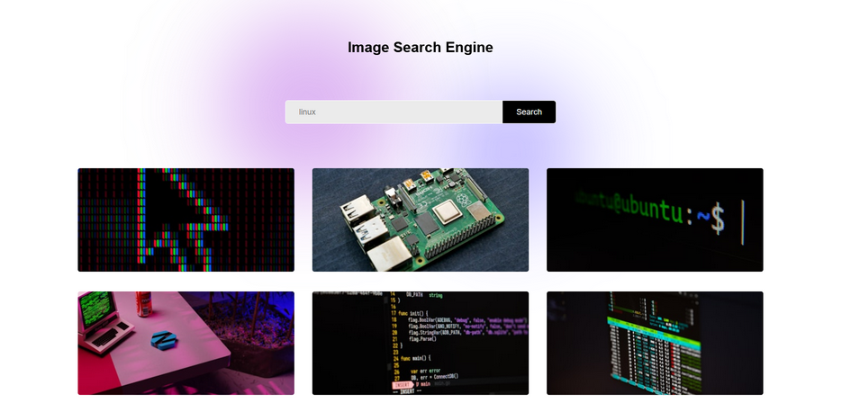

Website for a local cleaning company, built with wix framework where customers can schedule a cleaning
service online.
www.pinnacleprecision.com.au
Website for a local cleaning company, built with wix framework where customers can schedule a cleaning
service online.
pinnacleprecision.com.au
An API image search web app that uses the Unspash API.
An async function uses the unsplash url and access key to display the images within an independent app.
The app is designed to load a total of nine images initially, with a show more button that loads a further
nine new images.
#github

A web app IDE that allows for HTML, CSS and JS input with an output display.
The input areas are small as its only meant for playing around.
The JS just uses getElementByID tags for the HTML textarea.
I'm thinking of just a HTML version for prototyping plain text websites that can display mutiple pages at
once.
#github
A text editor for the web that allows for a few basic functions.
The editor provides the basic layout of a document where a user can input, edit and delete their data.
It resembles most other editors out there to keep it user fiendly and so that adjustments can be made
easily.
I got a few functions to work such as, text colour, alignment, size and format.
The colour pallet needs refinement as the text only changes to the colour picked, the second time a colour
is chosen.
I was working my way through the essential formatting tools but didn't implement the save function,
eventhough the icon exists in the menu.
I find myself drawn to the fundamental software tools, such as text editors, IDEs, communication apps, as I
find myself motivated to see how they work and find them the most practical.
The first text editor I tried to make was in python but it was a mess. This one was a lot easier but my goal
is to try building a few text editors in different languages.
#github
A very simple app that allows for basic crud activities such as input, editing and deleting.
A product code, name, quantity and price can be entered and stored in a table next to the input.
Attributes can be altered if neseccary through editing.
Entries are separated with a coloured background to easily differentiate between each product
The functions used are just getElementByID tags that allow for editing the input data.
#github
- 12 January 2025 -
As someone who’s been diving into web development for the past few months and doing a bit of freelance work,
I've had the chance to play around with JavaScript and Python. Both are great languages for building and
problem-solving, but I recently found myself wanting to branch out and try something different. Initially, I
looked into Swift, thinking it would be fun to develop a simple app for my watch or even just a custom watch
face.
However, my curiosity soon led me to C. It feels like one of those languages you can’t avoid when diving
deeper into programming. Beyond its reputation as a foundational language, I figured learning C would
provide a strong base for tackling other high-level languages down the road.
To get started, I turned to a few websites that offer lists of beginner-to-advanced projects. These have
been a great resource, giving me both guidance and inspiration for projects while helping me understand
syntax and design principles. I began with some simpler tasks like calculations and string comparisons to
get my feet wet.
From there, I challenged myself with more practical algorithms, such as bubble sort and insertion sort.
Working on these helped me grasp how efficient coding techniques can make a real-world impact.
#blog
- 17 August 2024 -
Over the past few months I've faced a series of challenges with my setup, ranging from power issues to
frustrating stutters during gaming sessions. Here's a few problems I faced and how I fixed them, or plan to,
as well as future plans for hardware upgrades.
I noticed that my PC, which had been idle for a while as I relied mostly on my laptop, refused to power on.
My assumption was the PSU just based on past experience. However, I decided to troubleshoot a bit before
buying a new unit. I tried different power cables and carefully reconnected all the internal hardware
components, but still no luck.
Eventually, I decided to bite the bullet and purchase a new PSU, opting to upgrade from a 500W to a 550W
unit. After swapping out the old one and connecting everything, I hit the power button and voilà! The PC
sprang back to life, good as new. Thankfully, nothing was damaged or corrupted, and the upgraded PSU seems
to be doing its job perfectly.
Recently I encountered some serious frame rate issues and stuttering. My first thought was that some
background GUI process might be hogging resources. But after ruling that out, updating my NVIDIA drivers,
and even lowering in-game settings and resolution, the problem persisted.
Finally, I decided to investigate the hardware itself and discovered the culprit: dust. Specifically, three
massive chunks of dust had accumulated in the GPU, preventing the fan from spinning properly. I pulled out
one, then another and another. After a thorough cleaning, I fired up the same games (Snowrunner &
Cyberpunk), cranked the settings back to high, and everything ran smoothly again. It was a good reminder of
how critical regular maintenance is.
When I initially set up my PC a few years ago, I somehow missed the fact that my motherboard had a built-in
Ethernet port. Instead, I relied on a Wi-Fi adapter/dongle for my internet connection. So I decided it was
time to upgrade to a network card for a more stable connection. I installed the card only to realize that my
PSU didn’t have any spare cables to power it.
But all was not lost, I finally noticed the Ethernet port on my motherboard. A quick connection later, and I
bid farewell to the Wi-Fi dongle. Now my PC is connected directly to my very basic unmanaged switch.
Finally, there's the issue with my Acer ultra-wide curved screen monitor. This screen has been great to use,
especially for gaming and multitasking with multiple apps or browser windows open side by side. But one day,
it suddenly decided to stay black. The power light was on, but the screen remained blank.
I searched online for similar issues but found nothing specific to this model. To make matters worse, the
function buttons on the monitor stopped working as well. For now, it's sitting in the corner of my room,
waiting to be sent off for repairs. In the meantime, I’ve resorted to using an old TV monitor for my daily
tasks definitely not ideal, but it gets the job done.
Its been a good learning experience, and getting things going again is always a rewarding feeling. The only
short term hardware upgrades I have planned for my setup are RAM for both PC and server, time to make the
jump from 16 to 32Gb.
#blog
- 05 August 2024 -
I recently dove into a tech project I'd seen others online do, turning a refurbished Dell Optiplex into a
fully functional Ubuntu server.
I grabbed a refurbished Dell Optiplex for $120. It came with a 120GB SSD, 8GB of RAM, and an Intel Core i5
processor. For a machine that’s not brand new, it’s almost on par with the gaming rig I put together a few
years back, minus the GPU.
The first thing I did was ditch Windows 10. I wanted to install Ubuntu Server for this project. I used a
bootable USB stick with Ubuntu Server on it and wiped the SSD clean. The installation was straightforward,
just follow the prompts. It didn’t take long, and soon I had a fresh Ubuntu server ready to go.
I'm using Ubuntu server just as a trial run, to see how it operates and behaves. I might stick with it, I
might not. I would also like to try Rocky Linux or Debian.
Next up, I needed a way to keep an eye on the server. I chose cockpit as its a web based monitoring tool and
so far its been a piece of cake. I get real-time stats on CPU usage, memory, disk space, and more.
Once installed, I could log in through my web browser (localhost:9090) and get a nice, clean dashboard to
manage everything, including the terminal remotely. It’s been handy for keeping track of how the server is
doing and handling basic admin tasks.
A few ideas for the next steps:
Web Hosting: I’m planning to set up the server for web hosting. I'd like to configure a web server like
Apache or Nginx and maybe even set up a database for dynamic sites.
Virtualisation: I’m also thinking about trying out virtualisation. With 8GB of RAM, the Optiplex should
handle a few lightweight virtual machines. I’m looking at tools like VirtualBox or KVM to create and manage
these virtual environments.
That's it for now, it’s been a straightforward project with some rewarding results so far. I'm looking
forward to the next steps and to see how it holds up.
#blog
- 03 August 2024 -
Recently, I embarked on a project to build a simple image search engine using the Unsplash API. Here’s a
step-by-step guide to how I did it.
First, I signed up on the Unsplash website to get access to their API. Once registered, I created a new
application to obtain my API key, which is necessary to authenticate requests.
I used Python for this project due to its simplicity and the availability of powerful libraries.
I designed a simple HTML form in index.html where users can search query.
After setting up the project, I tested it locally to ensure it worked as expected. Users could input a
search term, and the application would fetch and display relevant images from Unsplash.
This project was mostly for fun and experience to get an idea of APIs and how they work.
#blog
26 January 2025 | No-JS | mikeryanford@gmail.com